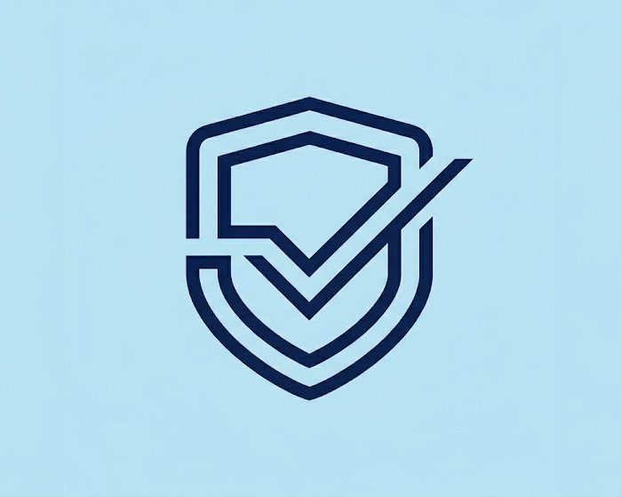
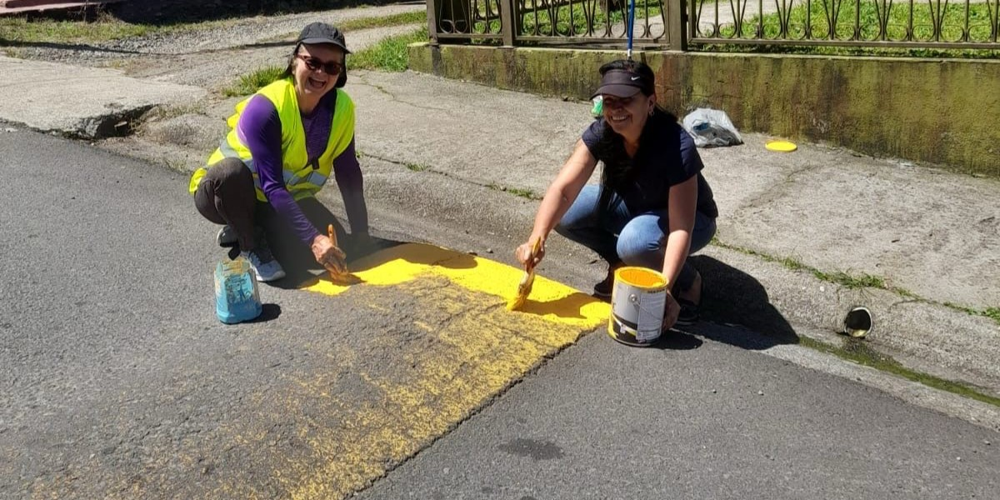
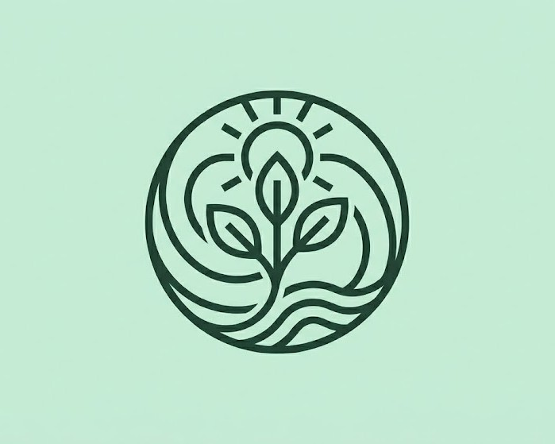
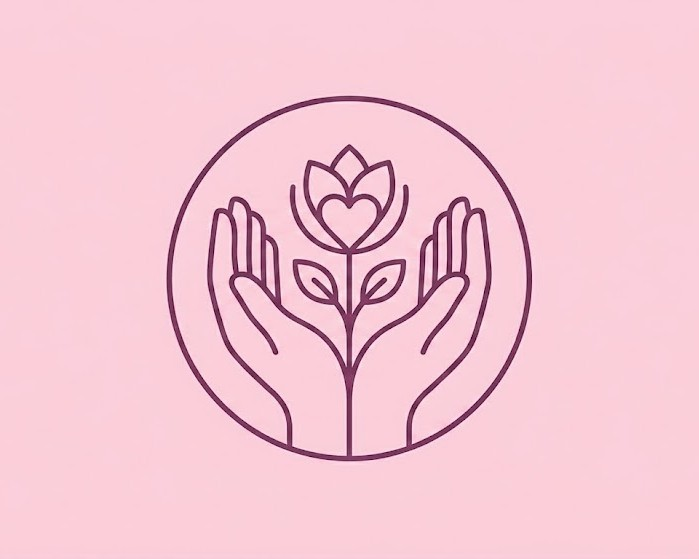
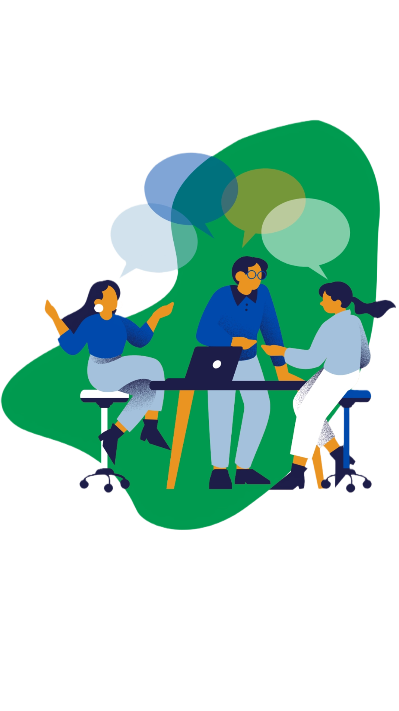

Seguridad Comunitaria
Promovemos acciones que fortalecen la seguridad y el bienestar de los vecinos, impulsando iniciativas de prevención y vigilancia comunitaria.
Nuestra asociación nació hace dos años gracias a la iniciativa de personas comprometidas con el bienestar y desarrollo de la comunidad. Trabajamos para impulsar proyectos que respondan a las necesidades de las familias, promoviendo la participación, la colaboración y el crecimiento colectivo.
Creemos que el progreso se construye juntos, fortaleciendo una comunidad más unida, inclusiva y llena de oportunidades.


Promovemos acciones que fortalecen la seguridad y el bienestar de los vecinos, impulsando iniciativas de prevención y vigilancia comunitaria.

Trabajamos por la conservación y el mantenimiento de los espacios comunales, fomentando una comunidad limpia, saludable y comprometida con el ambiente.

Apoyamos a las familias y grupos más vulnerables mediante proyectos solidarios que contribuyen a mejorar su calidad de vida.
Impulsamos actividades culturales, recreativas y deportivas que fortalecen la convivencia, la participación y el sentido de comunidad.

Podés formar parte de la asociación como afiliado. Solo necesitás ser vecino de la comunidad, tener 12 años o más y presentar una solicitud ante la Junta Directiva.
Buscamos vecinos comprometidos que deseen apoyar iniciativas comunitarias, actividades sociales, proyectos ambientales y acciones para el bienestar de la comunidad.
Los afiliados participan en las asambleas anuales de la asociación. Las reuniones periódicas son realizadas por la Junta Directiva, y próximamente se busca implementar encuentros vecinales para informar sobre proyectos y fomentar la participación de la comunidad.
¿Tenés alguna consulta o querés saber más sobre nuestro trabajo? Elegí uno de nuestros canales de comunicación.